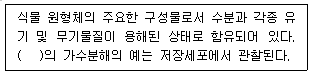
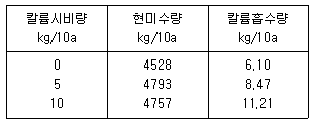
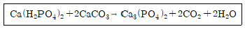

시설원예기사 (2012-03-04 기출문제)
1과목: 원예학개론
1. 차광재배(遮光裁培)로 일찍 꽃을 피우는 것 끼리 짝지어진 것은?
- 추국(秋菊), 포인세티아
- 스토크, 금어초
- 스토크, 포인세티아
- 추국(秋菊), 금어초
(정답률: 알수없음)

2. 결실관리에서 수분수(受粉樹)에 관한 설명으로 틀린 것은?
- 주품종은 수분수보다 개화기가 빨라야 한다.
- 수분수를 혼식하면 결실률이 높아지고 과실의 품질도 좋게 된다.
- 복숭아의 백도, 배의 황금배, 사과의 육오 등은 수분수의 효과가 크게 나타난다.
- 꽃가루가 불완전하거나 자가불화합성일 경우에 부분수가 필요하다.
(정답률: 알수없음)
3. 생태적 방제법(ecological control method)이 아닌 것은?
- 내병, 내충성 품종의 이용
- 기주식물(奇主植物)의 제거
- 환경조건 개선으로 건전한 수세 유지
- 점화유살(點火誘殺)
(정답률: 알수없음)
4. 고추에서 발생하는 병해로 균주가 유주자(遊走子)로 빗물이 들어가거나 하면 빨리 확산되는 병은?
- 역병(疫病)
- 덩굴쪼김병(蔓割病)
- 노균병(露菌病)
- 겹무늬병(輪紋病)
(정답률: 알수없음)
5. 사과나무 부란병(腐爛病)은 어느 부위를 침해하는 병인가?
- 뿌리
- 줄기
- 잎
- 과실
(정답률: 알수없음)
6. 다음 중 채소작물 저장 시 가장 중요한 요인은?
- 호흡작용 억제, 증산작용 억제
- 호흡작용 증대, 추대 억제
- 생장 증대, 중량감소 억제
- 탄산가스 증대, 증산작용 증대
(정답률: 알수없음)
7. 냉상육묘(冷床育苗)에 대한 설명으로 적합지 않은 것은?
- 가온하지 않고 육묘하는 방식이다.
- 터널을 설치하여 보온을 해주는 경우도 있다.
- 육묘상 바닥에 전열선 대신 냉각 파이프 등을 설치한다.
- 늦은 봄에 육모 할 때나 여름철 가식상으로 많은 쓰이며, 차광을 해주기도 한다.
(정답률: 알수없음)
8. 포도유리나방의 월동 장소로 가장 적당한 곳은?
- 낙엽
- 뿌리
- 줄기
- 떨어진 과실
(정답률: 알수없음)
9. 아름다운 포엽(苞葉)을 갖고 있지 않는 것은?
- 페페로미아
- 안스리움
- 포인세티아
- 산호수
(정답률: 알수없음)
10. 사과의 골든델리셔스 품종에서 동녹을 방지하기 위하여 봉지를 씌우는 가장 효과적인 시기는?
- 낙화 후 10일경
- 낙화 후 20일경
- 낙화 후 30일경
- 낙화 후 40일경
(정답률: 알수없음)
11. 무·배추 무사마귀병(根瘤病)의 발병에 알맞은 토양 산도는?
- 중성
- 산성
- 강알칼리성
- 약알칼리성
(정답률: 알수없음)
12. 토마토 풋마름병에 대한 설명으로 옳은 것은?
- 단범성 병이다.
- 세균에 의한 병이다.
- 월동은 주로 종자에서 한다.
- 뿌리에 침입시 뿌리가 흰색으로 변한다.
(정답률: 알수없음)
13. 과수의 수분 부족시 그 영향이 제일 먼저 나타나는 곳은?
- 가지
- 잎
- 과실
- 뿌리
(정답률: 알수없음)
14. 취목법(layering)에 대한 설명으로 옳지 않은 것은?
- 대량번식에 부적합한 방식이다.
- 균일한 묘목을 얻기 어려운 점이 있다.
- 사과나무 주요 품종의 접수 번식방법으로 주로 이용되고 있다.
- 어미나무에서 나온 가지에 부정근을 발생시켜 증식하는 방법이다.
(정답률: 알수없음)
15. 클라이맥터릭(Climacteric)형 과실이 아닌 것은?
- 사과
- 서양배
- 포도
- 복숭아
(정답률: 알수없음)
16. 밀식재배(密植裁培)의 단점이 아닌 것은?
- 수명이 짧아진다.
- 과실이 지나치게 많이 달린다.
- 과실의 품질과 착색이 좋지 못하다.
- 병충해 발생이 많다.
(정답률: 알수없음)
17. 다음 중 유피인경이 아닌 것은?
- 수선화
- 히아신스
- 무스카리
- 백합
(정답률: 알수없음)
18. 복숭아나무는 화분(花粉)이 불완전한 품종이 상당수 있는데 그 중 수분수(授粉樹)로 활용하기 가장 적당한 것은?
- 창방조생(倉方早生)
- 백도(白桃)
- 대구보(大久保)
- 사자조생(砂子早生)
(정답률: 알수없음)
19. 다음 과채류 중 생육 적정지온이 가장 낮은 작물은?
- 오이
- 수박
- 토마토
- 단고추
(정답률: 알수없음)
20. 무궁화는 어느 과(科)에 속하는가?
- 물푸레나무과
- 현삼과
- 운향과
- 아욱과
(정답률: 알수없음)
2과목: 시설원예학
21. 우리나라 수경재배가 상업적으로 경영되기 시작한 시기는?
- 1954년
- 1960년
- 1969년
- 1985년
(정답률: 알수없음)
22. 대부분 암수 짝짓기로 알을 낳고 월동 후 봄이 되면 부화하는데, 이 후 처녀생식하면서 약충을 생산한다. 적합한 환경에서 알 → 3회 탈피 → 성충으로 한 세대를 마치는데 5~8일이 소요된다. 번식적온이 15~25℃로서 시설내에 빠른 속도로 전파하는 해충은?
- 온실가루이
- 진딧물
- 총채벌레
- 굴파리
(정답률: 알수없음)
23. 관수방법 중 다공튜브 관수의 장점에 속하는 것은?
- 고압력에도 사용이 가능하다.
- 지표, 지상, 지표의 멀칭 아래 등 다양하게 설치 가능하다.
- 고기식으로 설치하면 물방울이 굵어 토양 입자가 튀어 오른다.
- 내구성이 강하며 수질에 관계없이 어디서나 사용이 가능하다.
(정답률: 알수없음)
24. 수경재배용 배양액 조성에서 NH4H2PO4 1me/L는?
- 114g/L
- 38g/L
- 114mg/L
- 38mg/L
(정답률: 알수없음)
25. 시설내에서 주간에서는 25℃ 내외로 광합성 기능을 최대로 하고, 일몰 후 4~5시간은 오이의 경우 15~16℃, 토마토의 경우 12~13℃의 비교적 고온을 유지하는 이유는?
- 시설내 CO2의 농도를 증가
- 병·충해 방제
- 난방비의 절감
- 동화산물의 전류촉진
(정답률: 알수없음)
26. 다음 중 식물공장의 특징 설명으로 옳은 것은?
- 연작장해가 심하다.
- 단위면적당 생산량이 떨어진다.
- 외부기상조건의 영향을 많이 받는다.
- 생육속도가 빨라 재배기간이 단축된다.
(정답률: 알수없음)
27. 대규모의 완전제어형 식물공장을 가동하여 현재의 상황에서 묘를 생산한다고 가정하면 비용을 가장 많이 차지할 가능성이 있는 것은?
- 냉방비
- 난방비
- 인건비
- 광에너지비
(정답률: 알수없음)
28. 광은 일정강도 이상에서는 광합성과 관계하고, 그 이하의 강도에서는 광형태 형성과 관계한다. 이 때 일 정광 감도(W/m2)의 경계는?
- 10-3
- 10-2
- 10-1
- 101
(정답률: 알수없음)
29. 공정 육묘장에서 플러그묘(Plug seedlings)를 생산하기 위해 자동파종기를 사용하게 되는 데 이곳에 이용되는 용기는?
- 포트
- 트레이
- 연결포트
- 짜개포트
(정답률: 알수없음)
30. 질소비료 중 엽면시비에 가장 알맞은 것과 그 농도는?
- NH4Cl : 0.2~0.5%
- (NH4)2HPO4 : 0.5~1.0%
- CO(NH2)2 : 0.5~1.0%
- (NH4)2SO4 : 0.5~1.0%
(정답률: 알수없음)
31. 질소와 칼륨은 식물체내에서 이동성이 좋은 다량원소이다. 수경재배에서 이들 원소의 결핍증이 가장 잘나타나는 식물체의 부위는?
- 새로 자라나는 부위
- 식물체 전 부위
- 오래된 기분의 잎
- 뿌리
(정답률: 알수없음)
32. 시설재배시 딸기 잿빛곰팡이병의 예방법으로 맞는 것은?
- 실내를 다습하게 한다.
- 밀식하고 다비재배 한다.
- 작물의 주변을 건조하게 한다.
- 변무하게 하기 위해 질소비료를 자주 사용한다.
(정답률: 알수없음)
33. 배양액 중 me/L(miligram equivalents per liter)에서 사용되는 당량의 정의로 가장 적합한 것은?
- 원자가/원자량
- 원자량/원자가
- 분자량/원자량
- 원자량/분자가
(정답률: 알수없음)
34. 다음 중 윤작의 효과가 아닌 것은?
- 콩과작물의 재배로 지력을 유지한다.
- 작물의 기지현상을 회피할 수 있다.
- 토지이용도가 낮아진다.
- 잡초와 병충해의 발생이 경감된다.
(정답률: 알수없음)
35. 수경재배에서 배양액을 만드는 방법으로 틀린 것은?
- 배양액은 식물생육에 필수적으로 필요한 16가지 원소 중 이산화탄소와 물에서 얻어지는 탄소, 수소, 산소를 제외한 13가지 원소의 적정한 비료염을 녹여 조성한다.
- 배양액은 작물에 필요한 원소를 식물의 뿌리가 흡수하기 좋은 이온의 상태로 적정한 농도로 만들어야 한다.
- 배양액은 작물에 해가 있는 이온을 함유해서는 안되며, 장시간 재배 할 경우에도 원소간의 균형이나 산도(pH)의 변화가 발생하여서는 안 된다.
- 원액을 조제한 후 용수와 희석하여 적정농도를 만든 후에는 산도(pH)를 측정하여 산도가 높으면 수산화칼륨(KOH)으로 낮추어 준다.
(정답률: 알수없음)
36. 보온을 위한 방열억제의 방법으로 부적합한 것은?
- 시설내 대류전열의 억제
- 시설내 방사전열의 억제
- 피복자재의 대류전열의 억제
- 환기전열의 억제
(정답률: 알수없음)
37. 오이, 토마토, 고추, 딸기 등의 시설재배에서 관수개시에 가장 적합한 pF값은?
- 1.4~1.7
- 1.7~2.1
- 2.2~2.5
- 2.6~3.0
(정답률: 알수없음)
38. 수박시설 재배시 야간온도가 30℃ 이상이 지속될 때 일어나는 증상이 아닌 것은?
- 덩굴이 웃자란다.
- 착과가 촉진된다.
- 수박의 당도가 감소한다.
- 성숙일수가 빨라진다.
(정답률: 알수없음)
39. 온실에서 피복하는 저렴한 피복재로서 장기간 사용하기 위해서 많이 사용하는 경질 필름은?
- 경질폴리에스테르(PET)
- 초산비닐(EVA)
- 유리섬유강화 아크릴(FRA)
- 폴리에틸렌(PE)
(정답률: 알수없음)
40. 온실이라는 구조물에 가해지는 하중을 작용기간에 따라 구분할 경우 장기하중에 속하는 것은?
- 작물하중
- 적설하중
- 풍하중
- 지진하중
(정답률: 알수없음)
3과목: 재배학원론
41. 10L의 동화상자내에 20cm2의 엽면적을 가진 식물체를 넣고 밀폐시킨 후 처음 500ppm의 탄산가스 농도에서 1시간 후 250ppm으로 변하였다. 이 때의 동화율 (mg·CO2/10cm2·hr)은 얼마인가? (단, 1L의 CO2는 1.976g이고, 기압이나 온도는 무시한다.)
- 12.9
- 4.24
- 2.47
- 5.63
(정답률: 알수없음)
42. 겨울철 시설내 난방 할 때 열손실의 비중을 가장 크게 차지하는 것은?
- 환기전열량
- 관류열량
- 지중전열량
- 난방열량
(정답률: 알수없음)
43. 양액재배시 배양액 및 배지의 적정 pH는?
- 4.5~5.5
- 5.5~6.5
- 6.5~7.5
- 7.5~8.5
(정답률: 알수없음)
44. 엽채류의 생장속도를 측정하는 방법으로 옳은 것은?
- 단위기간내에 단위면적당 증가한 엽병장(mm/m2/day)
- 단위기간내에 단위면적당 증가한 절간장(cm/m2/day)
- 단위기간내에 단위면적당 증가한 건물량(g/m2/day)
- 단위기간내에 단위면적당 증가한 증산량(g/m2/day)
(정답률: 알수없음)
45. 단일식물의 화아를 억제하기 위한 방법 중 가장 적합한 것은?
- 한계일장 이하로 차광한다.
- 한계일장 이상으로 보광한다.
- 자연일장상태에서 온도를 높인다.
- 자연일장상태에서 온도를 낮춘다.
(정답률: 알수없음)
46. 온실의 광투과율을 높이기 위해서는 지붕의 경사각이 중요하다. 피복재의 입사각과 광투율의 설명이 바르게 연결된 것은?
- 입사각이 10~30°에서 광투과율이 감소하기 시작하여 30~60°에서 급격히 감소한다.
- 입사각이 30~60°에서 광투과율이 감소하기 시작하여 60~90°에서 급격히 감소한다.
- 입사각이 30~60°에서 광투과율이 감소하기 시작하여 10~30°에서 급격히 감소한다.
- 입사각이 60~90°에서 광투과율이 감소하기 시작하여 30~90°에서 급격히 감소한다.
(정답률: 알수없음)
47. 광포화점에 대한 설명 중 옳지 않은 것은?
- 광포화점이 높은 작물은 강광하에서 생육량이 많다.
- 광합성 속도가 더 이상 증가하지 않는다.
- 작물은 군락상태에서 광포화점에 이르기 쉽다.
- 광합성의 양이 최대에 이르게 된다.
(정답률: 알수없음)
48. 다음 중 생육 최저한계온도가 가장 낮은 채소는?
- 수박
- 오이
- 딸기
- 고추
(정답률: 알수없음)
49. 변온관리 모델에서 조기 기온의 목적을 알맞게 설명한 것은?
- 기공저항 감소
- 호흡손실 억제
- 광합성 속도 증진
- 전류촉진
(정답률: 알수없음)
50. 다음 중 동일한 조건에서 연료의 평균발열량이 가장 높은 것은?
- 석유
- 경유
- 중유
- 무연탄
(정답률: 알수없음)
51. 다음 중 이산화탄소 농도 측정과 관련되며 연속측정에 가장 많이 이용되는 것은?
- 용액의 pH 측정 방식
- 적외선의 흡수율 측정 방식
- 화학반응 측정 방식
- 가스크로마토 그래프 방식
(정답률: 알수없음)
52. 절대습도의 변화에 의하여 증산량을 측정하는 방법은?
- 쳄버(chamber)법
- 히트펄스법
- 평량법
- 흡수법
(정답률: 알수없음)
53. 텐시오미터를 이용하여 시설토마토를 재배할 때 관수개시점으로 적정한 토양수분장력은?
- 0~5kPa
- -30~-20kPa
- -50~70kPa
- -80~100kPa
(정답률: 알수없음)
54. 시설내 광 환경을 좋게 하는 방법이 아닌 것은?
- 광투과성이 좋은 피복재를 사용한다.
- 연동에서 동서동으로 설치한다.
- 단동에서 동서동으로 설치한다.
- 천정의 광입사각을 작게 한다.
(정답률: 알수없음)
55. 온실 외기의 건구온도가 30℃, 외기 습구온도가 25℃, 실내온도가 28℃일 때 온실의 냉방효율은?
- 80%
- 60%
- 40%
- 20%
(정답률: 알수없음)
56. 서로 다른 금속을 접합해서 접점간에 온도차를 주면 기전력이 발생하는 원리를 이용한 온도계는?
- 백금측온저항체
- 적외선방사온도계
- 알코올 온도계
- 열전대온도계
(정답률: 알수없음)
57. 열선풍속계에 대한 설명이 틀린 것은?
- 저유속을 정밀하게 측정할 수 있다.
- 백금, 니켈 등의 열선을 이용한다.
- 열원의 방열량은 풍속에 비례한다.
- 작은 난류성분들도 측정할 수 있다.
(정답률: 알수없음)
58. 다음 중 엔탈피(enthalpy)에 관한 설명으로 가장 적합한 것은?
- 건공기의 열량으로서 노점온도의 상대치를 나타낸다.
- 습공기의 열량을 포함한 현열의 비중을 나타낸다.
- 어떤 온도를 기준으로 하여 물체 속에 함유되어 있는 총 열량을 나타낸다.
- 건구온도와 습구온도의 차에 따른 잠열의 비를 나타낸다.
(정답률: 알수없음)
59. 건조한 공기를 싫어하는 화훼류 재배를 위한 난방방법 중 가장 적절하지 못한 것은?
- 온풍난방기를 사용한 온풍난방방식
- 온수배관을 사용한 온수난방방식
- 지중 파이프에 의한 지중난방방식
- 히트 파이프를 이용한 국부난방방식
(정답률: 알수없음)
60. 보통 원예작물의 이산화탄소 농도의 포화점은?
- 800 ~ 1000 ppm
- 1000 ~ 1200 ppm
- 1200 ~ 1800 ppm
- 1800 ~ 2400 ppm
(정답률: 알수없음)
4과목: 작물생리학
61. 토양에 묻힌 종자는 단지나 실험실의 선반에 저장된 종자보다 더 오래 사는데, 여기서 종자의 수명에 영향을 미치는 요인이 아닌 것은?
- 광(光)
- 탄수화물
- 이산화탄소
- 에틸렌
(정답률: 알수없음)
62. 엽록체의 구조에 대한 설명 중 옳은 것은?
- 엽록소를 가지고 있으나 카로틴(carotene)이나 크산토필(xanthophyl) 은 함유하고 있지 않다.
- 이중막으로 싸여 있으며 광합성을 하는 녹색세포에만 있다.
- 1개의 엽육세포 내에 약 5 ~10개 있으며 호흡에 관여하는 다수의 미토콘드리아(mitochondria)도 있다.
- DNA를 가지고 있지 않다.
(정답률: 알수없음)
63. 작물의 증산작용에 대한 설명으로 옳은 것은?
- 잎의 기공을 토해서 이루어진다.
- 잎의 표피세포를 통해 이루어진다.
- 기온이 상승하면 잎의 증산작용이 억제된다.
- 강한 바람은 잎의 증산작용을 크게 촉진한다.
(정답률: 알수없음)
64. Lycopersicon peruvianum의 신장하는 화분관 속에 들어 있는 것은?
- 2개의 영양핵과 2개의 정핵
- 2개의 영양핵과 1개의 정핵
- 1개의 영양핵과 2개의 정핵
- 1개의 영양핵과 1개의 정핵
(정답률: 알수없음)
65. 과실의 성숙을 촉진시키는 물질은?
- gibberellin
- cytokinin
- ethylene
- CCC
(정답률: 알수없음)
66. 수경재배에서 작물의 흡수에 의한 수경액의 pH를 가장 크게 저하시키는 성분은?
- KH2PO4
- CaSO4
- NO3-
- NH4+
(정답률: 알수없음)
67. 작물에 있어서 동화물질(assimilates)의 주요 운반 통로는?
- 공급부위(Source)
- 수용부위(Sink)
- 체관부(Phloem)
- 물관부(Xylem)
(정답률: 알수없음)
68. 꽃의 기관 중에서 화분이 발아하는 곳은?
- 꽃가루주머니(약)
- 암술머리(주두)
- 씨방(자방)
- 꽃받기(화탁)
(정답률: 알수없음)
69. 작물의 광합성 반응 중 명반응과 암반응이 일어나는 곳으로 알맞게 짝지어진 것은?
- 명반응 : 그라나 암반응 : 틸라코이드
- 명반응 : 엽록소 암반응 : 시토크롬
- 명반응 : 틸라코이드 암반응 : 스토로마
- 명반응 : 그라나 암반응 : 스토로마
(정답률: 알수없음)
70. 상대생장률(RGR)을 가장 잘 설명한 것은?
- 일정한 시간 간격내에서 식물체의 초기 무게에 대한 생체중 증가
- 일정한 시간 간격내에서 식물체의 초기 무게에 대한 건물중 증가
- 단위엽면적당 단위 시간의 생체중 증가
- 단위엽면적당 단위 시간의 건물중 증가
(정답률: 알수없음)
71. 물 속에서도 이상이 없이 발아가 잘 되는 작물의 종자들만으로 구성된 것은?
- 상추, 당근
- 무, 과꽃
- 콩, 코스모스
- 양배추, 토마토
(정답률: 알수없음)
72. 식물의 일장반응에는 일장 이외에도 몇 가지 요인의 영향을 크게 받는다. 다음 중 일장반응에 영양하는 요인을 가장 관련이 적은 것은?
- 식물체의 연령 또는 생장정도
- 질소성분 함량 및 그 밖의 성분
- 야간온도(夜間溫度)
- 토양산도(土壤酸度)
(정답률: 알수없음)
73. 식물호르몬에 대한 설명 중 옳지 않은 것은?
- 기능적 특이성이 높다.
- 화학적으로 간단하고 분자량도 작다.
- 세포막투과성에 영향을 끼쳐 이온이동을 변화시킬 수 있다.
- 식물호르몬의 기능은 다른 물질에 의해 중개되는 경우가 많다.
(정답률: 알수없음)
74. 가압상법(pressure chamber method)이란 무엇을 측정하는 방법인가?
- 토양수분의 장력
- 강우시의 대기압
- 작물체의 수분포텐셜
- 작물체의 수분흡수력
(정답률: 알수없음)
75. 다음 [보기]의 ( )에 적합한 용어는?

- 액포
- 염색체
- 핵
- 리보솜
(정답률: 알수없음)
76. 다음 식물체 부위 중 삼투퍼텐셜이 가장 낮은 부위는?
- 줄기의 높은 곳에 붙어있는 어린 잎
- 줄기의 낮은 곳에 붙어있는 묵은 잎
- 어린열매
- 뿌리
(정답률: 알수없음)
77. 단위결과(單爲結果; Parthenocarpy)현상에 대한 설명으로 틀린 것은?
- 수정이 되지 않아도 종자가 발달하는 현상이다.
- 유전적으로 어떠한 작물에는 많이 발생하는 경우가 있다.
- 생장 조절 물질의 처리로써 쉽게 야기될 수 있다.
- 환경 조건의 차이에 따라서도 영향을 받는다.
(정답률: 알수없음)
78. 결핍되면 5탄당 인산회로를 통한 포도당의 분해가 늘어나고, 이로 인해 페놀(phenol)성 물질의 축척을 초래할 가능성이 높은 원소는?
- 붕소(B)
- 아연(Zn)
- 몰리브덴(Mo)
- 마그네슘(Mg)
(정답률: 알수없음)
79. 파이토크롬에 대한 다음의 설명 중 틀린 것은?
- 색소단백질이다.
- Pr형과 Pfr형으로 전환된다.
- 적외선과 원적외선의 파장만 흡수한다.
- 대부분의 광발아성 종자에 Pr형으로 존재한다.
(정답률: 알수없음)
80. 양분결핍증상의 하나인 황화현상(chlorosis)을 일으키는 것은?
- P
- N
- Cl
- Mo
(정답률: 알수없음)
5과목: 수경재배학
81. B층에 집적된 토양콜로이드는 주로 어느 층에서 이동된 것인가?
- A 층
- C 층
- R 층
- P 층
(정답률: 알수없음)
82. 토양의 수분에 대한 설명 중 옳은 것은?
- 토양의 비열은 토양수분 증가에 따라 증가한다.
- 사토는 함수량은 적지만 비열은 크다.
- 토양온도는 토양수분이 많을수록 쉽게 변화한다.
- 물보다 공기의 비열이 크다.
(정답률: 알수없음)
83. 탄질율(C/N)이 높은 유기물을 토양에 처리하였을 때 나타나는 현상은?
- 토양의 산성화
- 염장해
- 식물의 질소기아
- 질소 유실ㆍ증가
(정답률: 알수없음)
84. 토양의 입경분석시 침강 실린더에서 지름 20μm인 입자는 지름 10μm 인 입자보다 몇 배 더 빠르게 침강하는가?
- 2
- 4
- 6
- 8
(정답률: 알수없음)
85. 토양 반응과 인산의 유효도의 관계에 대한 설명으로 옳은 것은?
- 토양이 산성화될수록 인산의 유효도는 높아진다.
- 중성 근처의 토양에서 인산의 유효도가 가장 높다.
- 토양이 알칼리화될수록 인산의 유효도는 높아진다.
- 토양 반응은 인산의 유효도와 상관없다.
(정답률: 알수없음)
86. 1 : 1 격자형의 대표적 광물로서 적색 또는 회색의 포드졸 토양의 주요 점토광물은?
- Illite
- Vermiculite
- Montmorillonite
- Kaolinite
(정답률: 알수없음)
87. 다음 중 5대 토양 생성인자가 아닌 것은?
- 기후(climate)
- 시간(time)
- 수질(water quality)
- 지형(topography)
(정답률: 알수없음)
88. 건조 토양에서 KCI과 같은 중성염으로 침출했을 때 나타나는 산성을 무엇이라 하는가?
- 가수산성
- 활산성
- 전산성
- 치환산성
(정답률: 알수없음)
89. 다음 중 토양의 공극률 결정에 가장 중요한 요인은?
- 가비중과 진비중
- 염기포화도
- 토양반응
- 토성(土性)
(정답률: 알수없음)
90. 포장용수량이 25.0% 이고 위조계수가 15.2% 인 토양의 유효 수분은 몇 % 인가?
- 9.8%
- 15.2%
- 25.0%
- 40.2%
(정답률: 알수없음)
91. 다음 중 증수율(增收率)을 구하는 식으로 옳은 것은? (단, 표준시비구의 수량을 S, 시비구의 수량을 A, 무시 비구의 수량을 N 이라 한다.)
- A-N/S-N×100
- N-A/N-S×100
- A-N/S×100
- S/A-N×100
(정답률: 알수없음)
92. 다음 중 식물체의 아미노산으로 황을 함유하고 있는 것은?
- Histidine
- Valine
- Cysteine
- Tyrosine
(정답률: 알수없음)
93. 용과린의 특징에 대한 설명으로 옳은 것은?
- 원료는 석회질소와 중과석이다.
- 칼리질 비료이다.
- 흡습성이 크며 토양에 흡착이 잘 된다.
- 수용성 인산과 구용성 인산이 함께 들어있다.
(정답률: 알수없음)
94. 칼륨 비료에 대하여 시험을 한 결과가 다음 [표]와 같다. 10kg 시비구의 칼륨 이용율은 약 얼마인가?

- 11.2 %
- 51.1%
- 100%
- 102.2%
(정답률: 알수없음)
95. 석회비료를 과잉으로 시비하였더니 보리에 불임 현상이 발생하였다. 다음 중 어떤 비료를 시비하여야 하는가?
- 황산아연
- 석회질소
- 붕소질비료
- 황산망간
(정답률: 알수없음)
96. 인광석과 사문암을 주원료로 하여 제조하는 비료는?
- 인산암모늄
- 과린산석회
- 중과린산석회
- 용성인비
(정답률: 알수없음)
97. 토양을 이용하지 않고 Sachs액, Knop액 등 염류 용액만으로 식물을 배양하는 방법은?
- 사경법
- 토경법
- 수경법
- sonne법
(정답률: 알수없음)
98. 다음 [보기]와 같이 수용성 인산이 들어 있는 비료에 석회질 비료를 혼합하는 경우에 예상되는 결과는?

- 불용성으로 변한다.
- 불용성으로 변하나 P 흡수율은 오히려 증가한다.
- 용해도가 증가하여 Ca 와 P 두 성분의 흡수율이 증가한다.
- 용해도가 증가하나 P 흡수율은 감소한다.
(정답률: 알수없음)
99. 식물체내의 질소고정 작용에 가장 필요한 원소는?
- Mo
- Si
- Mn
- Zn
(정답률: 알수없음)
100. 비료를 사용할 때 토양산성화와 가장 거리가 먼 것은?
- 황산칼륨
- 요소
- 염화칼륨
- 황산암모늄
(정답률: 알수없음)